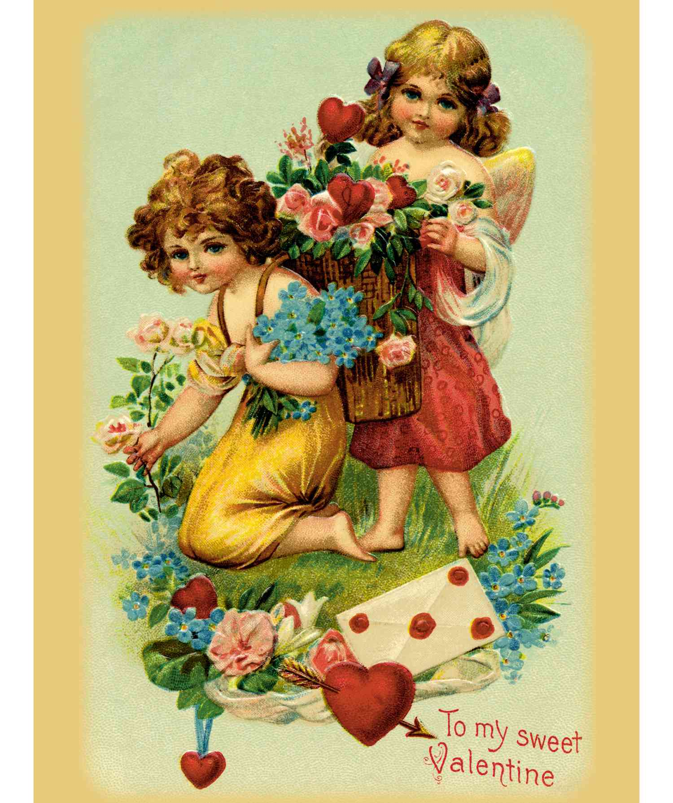

history of valentines day
- what is valentines day?
- history of valentines day?
how did valentines day start
he 8th-century Gelasian Sacramentary recorded the celebration of the Feast of Saint Valentine on February 14. The day became associated with romantic love in the 14th and 15th centuries when notions of courtly love flourished, apparently by association with the "lovebirds" of early spring.
what is the real story of valentines day?
The Strange but True Story Behind Valentine's Day Turns out, it was a pretty common name during Late Antiquity. As far as anyone can tell, the Saint Valentine of Valentine's Day was one of two guys preaching the good word in Rome in the third century. One of these two was martyred on February 14th 269, thus giving us the date for his eponymous day.
what are some foods people ate and still do
Caviar
truffles
Chocolate
lobster
spicy foods
codfish
Wagyu Beef or Venison
HAPPY VALENTINES DAY !
THE END!